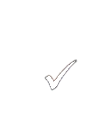
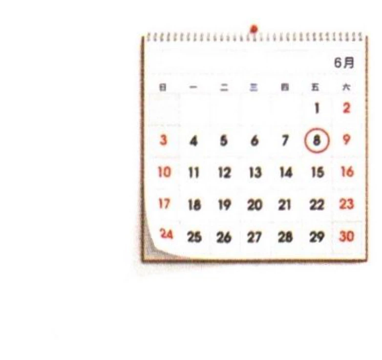
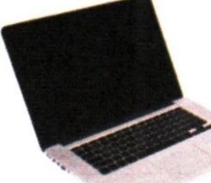

第二部分 Part IIPart IIЧасть II
第4—5题：听问题，选择正确回答。每题听两次。Questions 4-5: Listen to each question and choose the correct answer. Each question will be played twice.Вопросы 4-5: Прослушайте каждый вопрос и выберите правильный ответ. Каждый вопрос будет проигран дважды.
Jīntiān tiānqì zěnmeyàng?例如： 今天天气怎么样？
How is the weather today?Какая сегодня погода?fēicháng rèA 非常热
very hotочень жаркоhěn hǎotīngB 很好听
sounds beautifulзвучит красивоzài hē shuǐC 在喝水
drinking waterпьет воду4.
wǒ bú huìA 我不会
wǒ chī jiǎoziB 我吃饺子
zuò miàntiáorC 做面条儿
5.
xiūxiA 休息
XīngqīsìB 星期四
wǔ kǒu rénC 五口人
第三部分 Part IIIPart IIIЧасть III
第6—8题：听对话，选择最匹配的图片。每题听两次。Questions 6-8: Listen to each dialogue and choose the correct picture. Each dialogue will be played twice.Вопросы 6-8: Прослушайте каждый диалог и выберите наиболее подходящую картинку. Каждый диалог будет проигран дважды.
A
B

C
D
